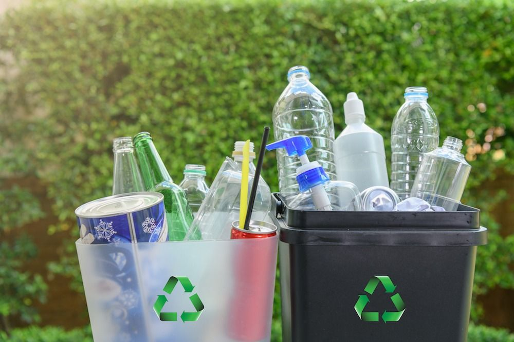

Type Sampah

Sampah Organik
Sampah organik adalah sampah yang berasal dari bahan-bahan alami atau makhluk hidup yang dapat terurai dengan cepat oleh mikroorganisme.
Jual

Sampah Anorganik
Sampah anorganik adalah sampah yang terbuat dari bahan-bahan yang tidak mudah terurai dan tidak berasal dari makhluk hidup. Biasanya, sampah anorganik berasal dari bahan-bahan buatan manusia.
Jual
Sampah B3
Sampah B3 adalah jenis sampah yang mengandung bahan kimia atau zat berbahaya yang dapat membahayakan kesehatan manusia dan lingkungan.
Jual